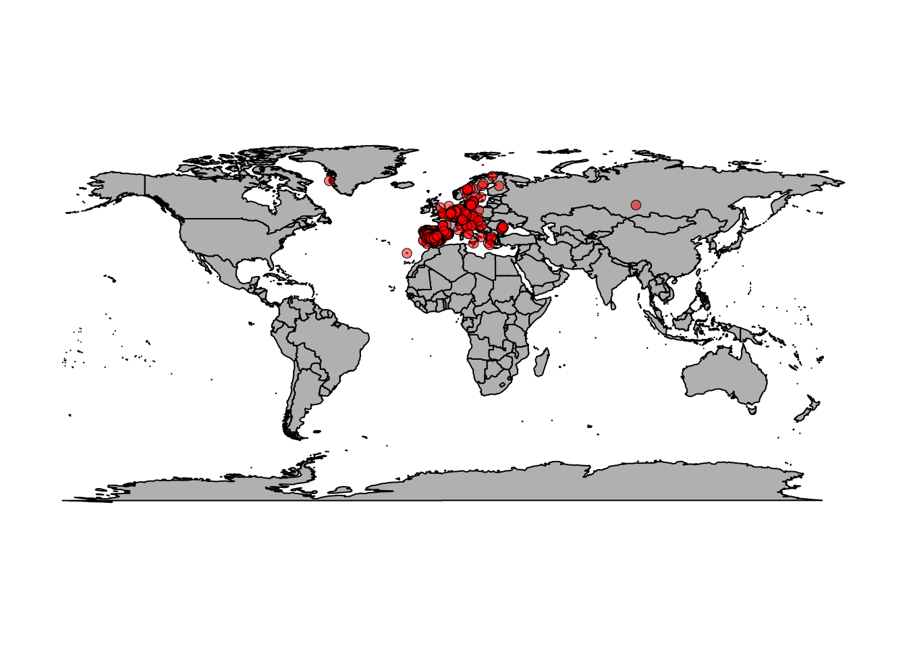
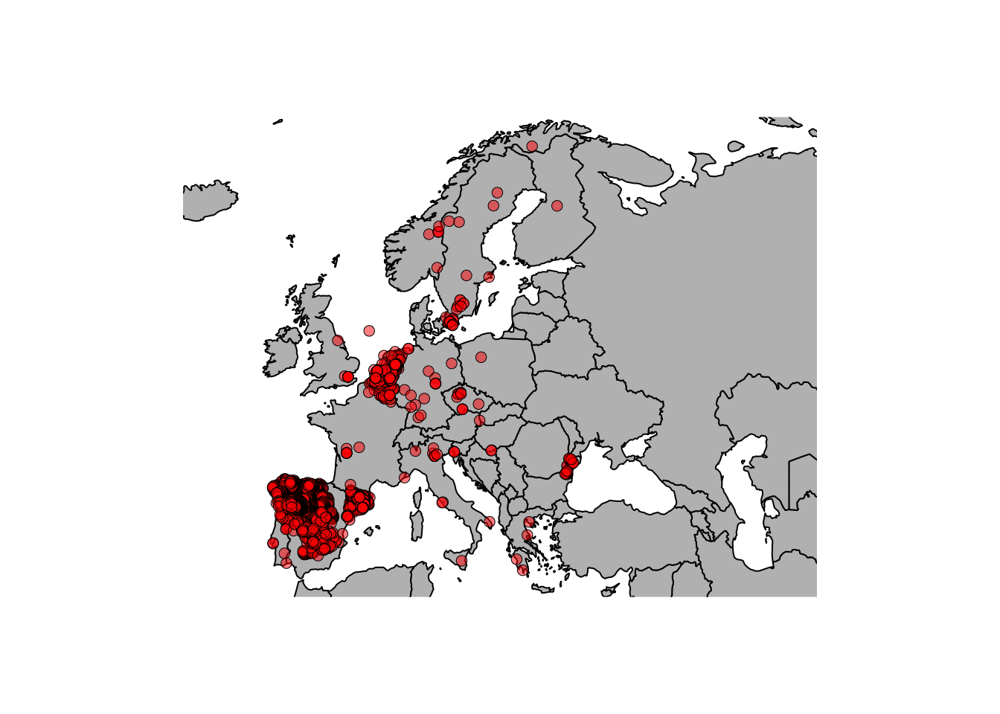

\(~\)
In this exercise, you will:
rgbifCoordinateCleanervirtualspecies\(~\)
There is a large and growing number of databases that contain species
occurrence records (e.g., GBIF, eBird, iNaturalist, BIEN, etc.). These
databases are sometimes based on certain taxa or geographic regions so
it is important to find a source that best meets the needs of your
project. While we won’t focus on it in this exercise, note that the spocc package
can be used to query and collect species occurrence data from many
sources.
We will focus on obtaining data from GBIF using the
rgbif package, which has its own detailed
vignette as well as a helpful screencast.
In this short exercise, we will download data for a focal species. You will also download data from GBIF in the following section on cleaning occurrence data.
library(rgbif)
# You can query GBIF using a species name or a taxonomic key
# One way to find the key for your study species is:
key <- name_suggest(q="Canis lupus", rank="species")$data$key[1]
# Now download occurrence data for your species
# Note: by default, this function will only be limited to 500 observations
# Note: this can takes some time if there are many observations
gbif_data <- occ_search(taxonKey=key, # query by taxonomic key
limit=10000, # increase the number of records downloaded
hasCoordinate=TRUE) # only get records with geographic coordinatesYou can also search directly by species name and filter the results in various ways. For example:
occ_search(scientificName="Canis lupus")
# There are many options to filter the records returned, e.g.,
gbif_data <- occ_search(scientificName="Canis lupus",
continent="europe", # only get records from Europe
limit=10000,
hasCoordinate=TRUE,
hasGeospatialIssue=FALSE)We have downloaded data but what do we actually have?
The occ_search function returns an object of class
gbif. This is essentially a list with slots for metadata
(meta), the occurrence data itself (data), the taxonomic hierarchy data
(hier), and media metadata (media). For more details, see
?occ_search. Generally, we are most interested in the
actual occurrence data, which is available in the (data) slot.
gbif_data$dataAs you will see, there is a lot of information held here but, for
now, we focus only on the geographic locations of records. Let’s plot
the records we downloaded on a map (with help from the maps
package).
library(maps)
map(fill=TRUE, col='grey')
points(gbif_data$data$decimalLongitude,
gbif_data$data$decimalLatitude,
bg=rgb(1,0,0,0.5), pch=21, lwd=0.5)
There are a lot of points scattered around Europe but also some seemingly strange points. Wolves in Greenland? Wolves in the Canary Islands? Hmmm… Let’s zoom in on Europe.
map(xlim = c(-20, 59),
ylim = c(35, 71), fill=T, col='grey')
points(gbif_data$data$decimalLongitude,
gbif_data$data$decimalLatitude,
bg=rgb(1,0,0,0.5), pch=21, lwd=0.5)
This looks nice… But are there wolves in the North sea? Why so many observations in Spain / Belgium and yet so few in France? It seems that we need to think more about these observations in terms of potential errors as well as biases.
\(~\)
The fact that we have species occurrence data at our fingertips has largely driven the increased use of SDMs/ENMs. Unfortunately, these data sometimes contain errors of various types and it is important to clean the data prior to use in order to avoid problems and erroneous conclusions.
For this exercise, we will work through the tutorial from the CoordinateCleaner
package to acquire and clean data from GBIF. Make sure you install and
load the package before beginning.
install.packages("CoordinateCleaner")
library("CoordinateCleaner")Then proceed to work through this vignette: https://ropensci.github.io/CoordinateCleaner/articles/Cleaning_GBIF_data_with_CoordinateCleaner.html
Note that there are other packages to clean occurrence data (e.g., scrubr). The
CoordinateCleaner vignette includes a nice comparison of
different packages (see
here).
If you have time: Use CoordinateCleaner with
the data we downloaded for Canis lupus. What records are
flagged?
\(~\)
It can be useful to generate a virtual species, with known
properties (spatial distribution, relationship with environmental
variables, abundance) for various reasons. For example, to test
methodological choices when building species distribution models. It is
possible to simulate the distribution of a virtual species in many
different ways but here we will use the virtualspecies
package (you can read the paper associated with the package here).
Of course, you need to first install and load the package:
install.packages("virtualspecies")
library("virtualspecies")Then work through the virtualspecies tutorial here: http://borisleroy.com/virtualspecies_tutorial/